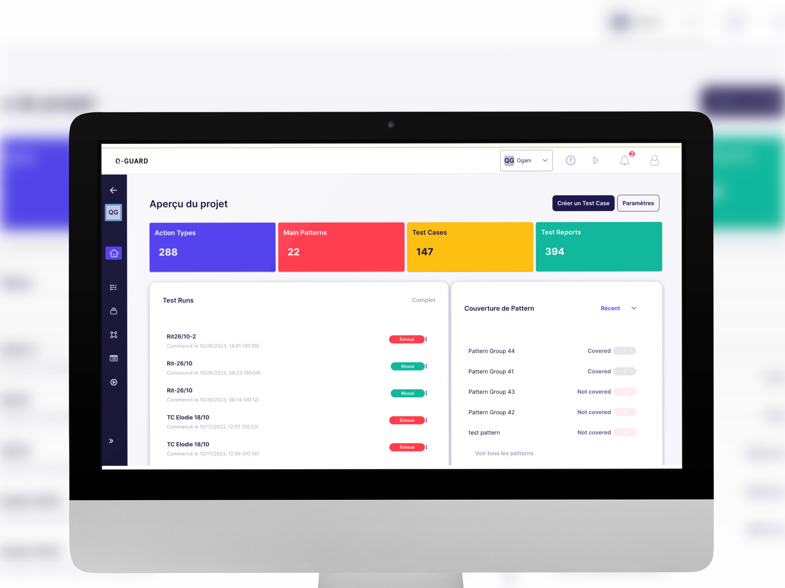

Des cas de test automatiques issus des parcours réels
Q-Guard transforme les parcours que vos utilisateurs empruntent vraiment en scripts de test Selenium en Java, C#, Ruby ou Python, installés sur vos propres serveurs.
Q-GUARD, en bref
Réduit fortement le temps de création des cas de test.
Q-Guard est un outil d'automatisation des tests conçu par Q-Leap, société de test logiciel basée au Luxembourg. Il observe la façon dont les utilisateurs réels parcourent une application web, anonymise ces données à la source, détecte les parcours qu'ils répètent et les transforme en cas de test et en scripts Selenium en Java, C#, Ruby ou Python, sur vos propres serveurs.
- Redocumenter les fonctionnalités sans cahier des charges
- Générer rapidement des cas de test automatisés
- Réduire le temps de conception et de maintenance des tests
- Créer des cas de test plus réalistes.

pour tous les testeurs
Ne cassez plus ce qui fonctionne : prévenez les régressions.
Testeur manuel, responsable de test ou ingénieur en automatisation : réduisez le temps de conception de vos cas de test, créez des scénarios de tests de non-régression réalistes à partir de l'expérience réelle des utilisateurs, automatisez-les sans coder et limitez la maintenance de vos tests automatisés.
- Pour les testeurs
- Pour les développeurs
- Pour les métiers du digital
- Pour les responsables IT
- Pour les profils techniques ou non
- Pour tous ceux qui veulent stabilité et qualité !
Ce que fait Q-GUARD
Générez des cas de test
couvrant les parcours utilisateurs
Découvrez les cas d'usage de votre application grâce à l'analyse du comportement des utilisateurs et générez automatiquement vos tests.
Identifie les parcours réels des utilisateurs
Q-Guard capte le comportement des utilisateurs sur plusieurs environnements applicatifs (production / test).
Aide à créer des cas de test automatisés.
Q-Guard vous aide à créer des cas de test automatisés, simplifie le processus et rend vos campagnes de test plus efficaces.
Détecte les nouvelles fonctionnalités et tient les cas de test à jour.
Q-Guard détecte les nouvelles fonctionnalités et maintient automatiquement vos cas de test à jour.
Exporte des cas de test automatisés
Q-Guard exporte des scripts de test automatisés Selenium en Java, C#, Ruby, Python et d'autres langages, prêts pour votre intégration CI/CD.
Automatise les tests
Q-Guard automatise les tests : il analyse les interactions des visiteurs, crée les cas de test et les exécute.
Génère et exécute rapidement les cas de test.
Q-Guard exécute les cas de test sans effort, directement depuis la plateforme.
Simple à utiliser. Aucune compétence en code requise.
Q-Guard, une interface intuitive, sans compétence en développement.